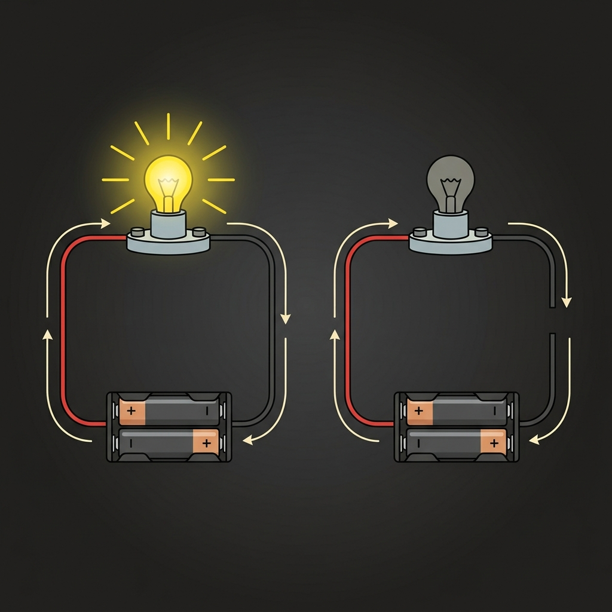

How does electricity move, and what happens when the path breaks?
Think about a roller coaster. If a single section of the track is missing, what happens to the train?
How is an electrical circuit similar to a roller coaster track?
Hook students with the roller coaster analogy: a train needs a continuous loop of track. If there is a break anywhere, the train crashes/stops. An electrical circuit is exactly the same—current needs a complete loop to move.
Today we will analyse circuit connections and explain why a component does or does not operate.
Today we learn how electricity moves in a loop, and how to find and fix breaks in a circuit.
Read the learning intention and success criteria. The focus is on systematic path analysis and reasoning rather than trial-and-error assembly.
Answer on your mini-whiteboard:
Talk with your partner and answer:
Quick retrieval of components and low-voltage safety rules. Ensure students recall the inspect-plan-connect-check-power flow from Lesson 2.
Electricity is not a substance that gets "consumed" or used up by a bulb. It transfers energy as it flows in a loop.
For current to flow, we must have a **closed conducting path**:

Electricity travels in a loop. It must go out and get back to the battery.
A working circuit must have:
Explain that electricity does not get consumed. Use the bicycle chain metaphor: if you break a link, the entire chain stops rotating. The current is a loop of charge carriers.
If a wire is connected from the battery [+] terminal to a bulb contact, but the other bulb terminal has no wire returning to the battery, will the bulb light? Why?
Write: YES or NO, and your scientific reason.
If we connect only one side of the battery to the bulb, will the bulb turn ON?
Hold up: YES or NO
Scan answers. Address the misconception that "one wire is enough because electricity just flows into the bulb and stops." Re-emphasize the loop requirement.
When a circuit fails, we look for breaks in the path. The three most common breaks are:
The clip clamps the colored plastic coating instead of the bare copper wire. Plastic blocks flow.
The wire is close to the metal screw but not physically touching it. Air acts as a break.
The switch is in the OFF position, meaning the metal bridges inside are separated.
Three common mistakes that break our loop:
The clip is biting onto plastic insulation. Electricity cannot flow through plastic.
The wire looks connected, but there is a tiny air gap. Electricity cannot jump across air.
The switch is open, leaving a gap inside the switch body.
Demonstrate these three common faults using real components under a document camera or on the desk. Emphasize that "nearly touching" is not enough—there must be firm metal-to-metal contact.
Trace the paths. Circle the break point in each diagram on the board:
Diagram 1: Why is this incomplete?
+----[ Battery ]----+
| |
| [Bulb]
|
+----[ Switch ]----+
Diagram 2: Where is the gap here?
+----[ Battery ]----+
| |
| [Bulb]
| |
+----[ Switch ]/ --+
Find the gap in these circuits:
Circuit 1: Missing wire
+───[ Battery ]───+
│ │
│ [Bulb]
│
+─────────────────+
Circuit 2: Open switch
+───[ Battery ]───+
│ │
│ [Bulb]
│ │
+───/ Switch ────+
Invite students to the board to circle the break using the pen tool. Diagram 1: Gap on the right wire side. Diagram 2: Open switch symbol. Ask: Why do these breaks stop the bulb from lighting?
Follow this checklist when diagnosing a non-working circuit:
How to fix a circuit that won't turn ON:
Walk through this checklist before students begin building. It sets the baseline for the partner challenge where they must systematically diagnose errors.
We will use our digital Circuit Lab site to analyze faults:
We will open our Circuit Lab website:
Video: A Complete Circuit
Watch the 2-minute animation explaining the complete loop path.
Give instructions for launching the WS03 web module and watching the VC03 video. Ensure students know their goals: complete tracing 5 cases and write down definitions.
Your Mission (TC03):
Always disconnect battery power before adding or moving wires.
Never make a direct connection from positive to negative terminal without a bulb!
Build Mission:
Unplug the battery before editing wires.
Make sure the bulb is in your loop to prevent battery heating!
Brief students on the Tinkercad simulation first, then physical tools. Explain the rules of the Hidden Fault Game: students must trace systematically rather than guess.
In your journal **JN03**, ensure you complete:
In your journal **JN03**, write and draw:
Ensure students open JN03. Walk around to check that the CER explanation details the difference between plastic (insulator) and metal (conductor) correctly.
Why does a tiny break in a wire stop a bulb from lighting, even if the battery is fully charged and all other wires are connected correctly?
Write your answer in JN03 or on your board!
Check that students understand that low-voltage electricity cannot flow across air gaps or insulators. A single break opens the loop, halting the current instantly throughout the loop.